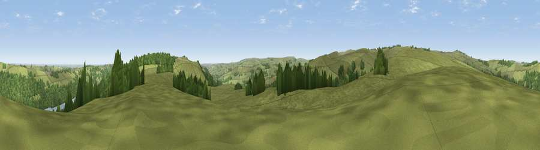

Viewpoint near Ewden Village
#10345 in England · top 11% of its area beats it · near Ewden VillageThe view, rendered

A 360° render of this exact spot computed from the terrain model, tree cover and land cover — summer colours, afternoon light, calibrated against photographs of famous viewpoints. Real trees, hedges and buildings will differ in detail.
The panorama
Grey silhouette: terrain skyline in each direction (720 bearings, Earth curvature and refraction included). Dashed green: skyline with trees (+15 m) and buildings (+8 m) as obstacles. Blue strip: how far the ground is visible on each bearing.
Where the view opens
Wedge length = distance to the farthest visible ground on that bearing (vegetation-aware). Rings at 10, 25 and 50 km.
What fills the view
74% grassland · 22% woodland · 2% water · 1% cropland
Angular shares of the visible panorama (visual magnitude), not map area. Landscape diversity 0.31 (0–1 Shannon).
Key numbers
More beautiful places nearby
The staircase of upgrades: each row has a higher view potential than everything closer. Driving times are estimates from straight-line distance, calibrated against real road routing — check an actual route before setting out.
| Place | Direction | Drive | Score |
|---|---|---|---|
| West Nab | ESE · 2 km | ~5 min | 71.7 |
| Viewpoint near Stocksbridge | NNE · 5 km | ~11 min | 73.1 |
| Viewpoint near Wharncliffe Side | ENE · 7 km | ~14 min | 75.0 |
| Viewpoint near Wharncliffe Side | ENE · 7 km | ~14 min | 75.2 |
| Viewpoint near Greenfield | WNW · 26 km | ~42 min | 76.0 |
| Wild Bank | W · 26 km | ~42 min | 76.2 |
| Viewpoint near Carrbrook | WNW · 26 km | ~42 min | 77.1 |
| Viewpoint near Edenfield | WNW · 49 km | ~70 min | 77.5 |
53.44826, -1.62693 · source: screening · position refined by local search. Computed location — check access rights before visiting.